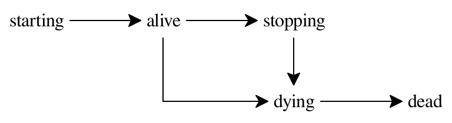

The Neuron Guide
This guide provides examples, tutorials, notes and other documentation that do not belong in The Neuron Reference.
1 Introduction
Neuron is a series of Racket libraries that provide a consistent API over a spectrum of functionality related to the creation, operation, integration, and evolution of concurrent, distributed, and decentralized run time environments and applications. At its core is a communication-based concurrency model and a structural pattern-based DSL for working with composable evaluators.
| |||||||||||||
| |||||||||||||
| |||||||||||||
| |||||||||||||
| |||||||||||||


2 Communication-based Concurrency
Neuron uses a concurrency model of lightweight processes communicating over named synchronous exchangers. Neuron processes extend Racket threads with support for life cycle hooks and two orthogonal lines of communication. In other words, a process is like a thread that can clean up after itself and keep “secrets.”
2.1 The Process Life Cycle
When a process is created, hooks and handlers may be installed. A hook is a function to be invoked automatically at specific points in the life time of a process.

A process is created in the starting state when another process attempts to spawn a new thread of execution. The requesting process blocks until the new process is alive and a fresh process descriptor for it has been returned.
A process stays alive until its thread of execution terminates. A process can terminate itself, either by reaching the end of its program or by issuing a quit or die command. A process can also use the stop or kill command to terminate any process it holds a process descriptor for.
When a process reaches the end of its program or is terminated by quit or stop, it enters the stopping state while it calls its on-stop hook. When a process reaches the end of its on-stop hook or is terminated by a die or kill command, it enters the dying state while it calls its on-dead hook. A process is dead when its on-dead hook returns.
> (wait (start (start (process (λ () (displayln 'ALIVE))) #:on-stop (λ () (displayln 'STOP-1)) #:on-dead (λ () (displayln 'DEAD-1))) #:on-stop (λ () (displayln 'STOP-2)) #:on-dead (λ () (displayln 'DEAD-2))))
ALIVE
STOP-1
STOP-2
DEAD-1
DEAD-2
The on-dead hook is for freeing resources no longer needed by any process. Neuron uses the on-dead hook internally to terminate network listeners and kill sub-processes. This hook runs unconditionally and can’t be canceled.
The on-stop hook is for extra or optional clean-up tasks. Neuron uses the on-stop hook to close ports, terminate network connections, and stop sub-processes. For example, some codecs close input ports and output ports when stopped but not when killed so they can be swapped out mid-stream or restarted after errors have been handled.
The deadlock function waits for the current process to terminate, allowing the computation to diverge efficiently. It can be used as a termination “latch” to prevent the current process from ending until stopped or killed.
> (kill (start (start (process deadlock) #:on-stop (λ () (displayln 'STOP-1)) #:on-dead (λ () (displayln 'DEAD-1))) #:on-stop (λ () (displayln 'STOP-2)) #:on-dead (λ () (displayln 'DEAD-2))))
DEAD-1
DEAD-2
2.2 Command Handlers
Applying a process descriptor to an argument list invokes its command handler, a simple dispatch mechanism. Because the command handler is installed while a process is starting, it can have direct access to the internal state of the process via the constructing closure.
Neuron uses the command handler to provide simple properties and methods.
> (define π (let ([env #hash(((a b) . 1) ((c) . 2))]) (start (process deadlock) #:command (λ args (hash-ref env args #f))))) > (π 'a 'b) 1
> (π 'c) 2
> (π 'd) #f
Steppers can be used as command handlers, enabling term-based DSLs for privileged control.
2.3 Data Flow
Processes can be combined to provide restricted or revocable access to others.
> (define π (sexp-codec (string-socket #:in "12 34 56" #:out #t))) > (define to-π (proxy-to π)) > (define from-π (proxy-from π)) > (recv from-π) 12
> (give to-π 'abc) #t
> (get-output-string (π 'socket)) "abc\n"
> (or (sync/timeout 0 (recv-evt to-π)) (sync/timeout 0 (give-evt from-π))) #f
> (define A (process (λ () (define π-ref (take)) (displayln `(IN-A ,(recv π-ref))) (emit) (take) ; B kills π-ref (displayln `(IN-A ,(recv π-ref))))))
> (define B (process (λ () (define π (sexp-codec (string-socket #:in "12 34 56"))) (define π-ref (proxy π)) (give A π-ref) (recv A) ; A reads live π-ref (kill π-ref) (give A) (wait A) ; A reads dead π-ref (displayln `(IN-B ,(recv π)))))) > (sync (evt-set A B #:then void))
(IN-A 12)
(IN-A #<eof>)
(IN-B 34)
2.4 Working with Threads
Processes and threads can be combined.
> (define (producer i) (thread (λ () (sleep (/ (random) 10.0)) (emit i))))
> (define (make-producers) (apply evt-set (for/list ([i 10]) (producer i)))) > (define π (process (λ () (sync (make-producers)))))
> (for/list ([_ 10]) (recv π)) '(7 2 3 0 9 1 8 4 5 6)
> (define (consumer) (thread (λ () (write (take)))))
> (define (make-consumers) (apply evt-set (for/list ([_ 10]) (consumer)))) > (define π (process (λ () (sync (make-consumers)))))
> (for ([i 10]) (give π i)) 0123456789
3 Evaluation
A term is defined recursively as a literal value or a serializable composite of sub-terms. For example, the symbol
'a-symbol
and the number
123
are terms because they are literal values. The structures
'(a-symbol 123)
and
#hasheq((a-symbol . 123))
are also terms because they are read/writeable composites of literals.
A stepper is a function that maps one term to another. For example,
(case-lambda [(a) 1] [(b) 2] [else 0])
maps any term to a number between 0 and 2. Similarly,
(match-lambda [1 'a] [2 'b] [_ 'z])
maps any term to 'a, 'b, or 'z. A more realistic example is values, which maps every term to itself; or the function
(define step (match-lambda [(list (? term? e1) (? term? e2)) #:when (not (value? e1)) (list (step e1) e2)] [(list (? value? v1) (? term? e2?)) #:when (not (value? e2)) (list v1 (step e2))] [(list `(λ ,(? symbol? x11) ,(? term? e12)) (? value? v2)) (substitute e12 x11 v2)] [_ 'stuck]))
a small-stepper for the untyped lambda calculus.